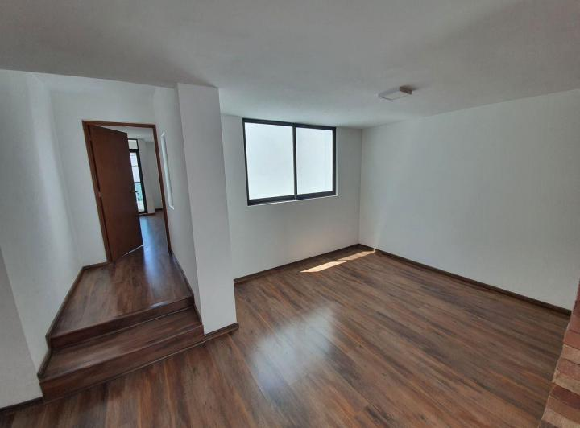
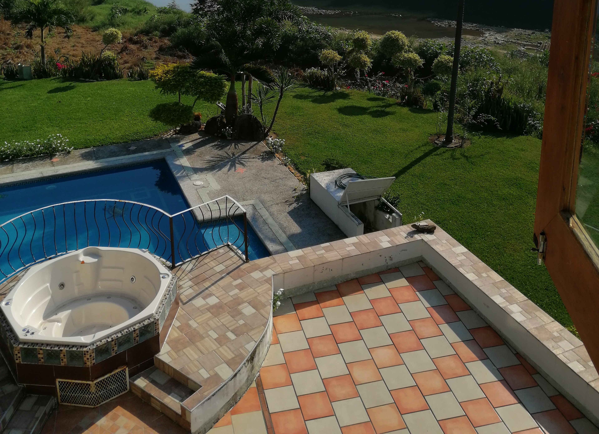
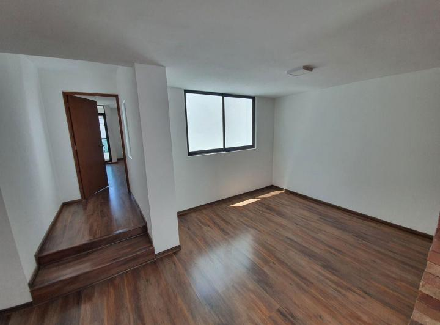
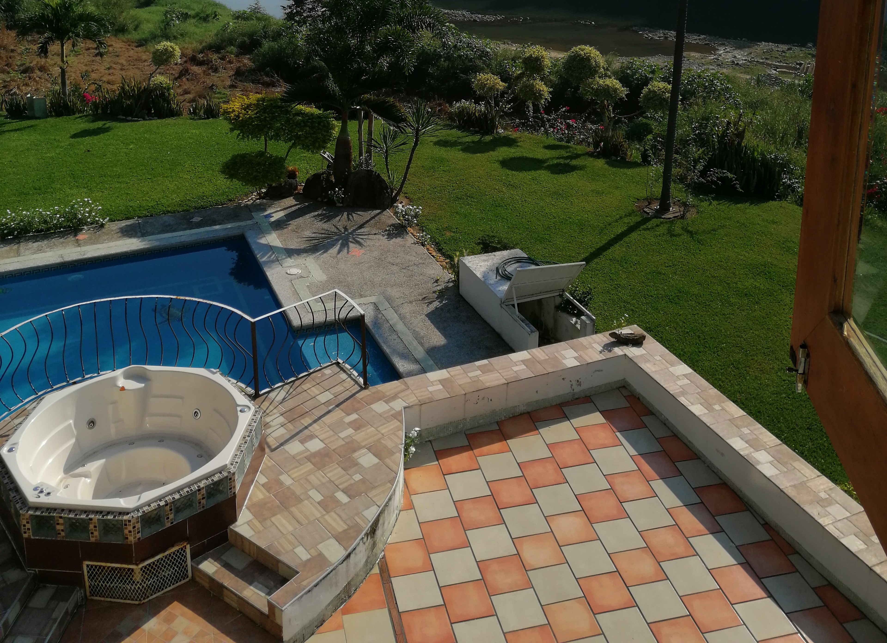

Quienes somos
1Historia
Una empresa originaria de la ciudad de Martinez de la Torre, la cual a participado en proyectos dentro de esta ciuidad y en otras cuidades aledañas, todo a cargo del señor Arquitecto Antonio Rodriguez Baranda, ciudadano reconocido por su papel como ex presidente municipal constitucional; Diputado local el distrito en la LVII Legislatura del estado; Subdirector General de la DGTYTE, coordinador del "Movimiento Veracruzano por Labastida 2000" en la zona centro del estado de Veracruz.
2compromiso
Nuestro compromiso es cumplir en tiempo y forma nuestros trabajos para sadisfacer a nuestros clientes y comprometidos con los proyecto en los que participamos.
Galeria

 




Nuestros servicios

Venta de inmuebles
Venta de terrenos, departamentos y casas habitacionales en el fraccionamiento presidentes y residencial rio, en el municipio de Martinez de la Torre, Veracruz.

Construccion
Servicios de construcción y edificacion de inmuebles.

Gestoría
Gestoría de créditos de vivienda (IMSS y FOVISSTE).